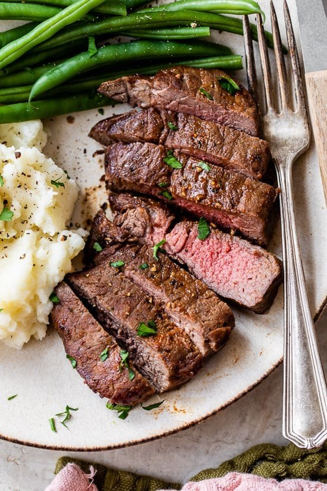

How to make a flat iron steak

Description
Flat iron steak is cut from beef shoulder. To make a flat iron steak, butchers remove the connective tissue to separate the top shoulder blade into two cuts: One is the top blade, the other is the flat iron.
Flat iron steak is nicely marbled and is less expensive than other steaks, which makes it a popular choice among home cooks. When it's cooked correctly, flat iron steak is wonderfully tender and juicy.
Ingredients
- 1 (2 pound) flat iron steak
- 2 ½ tablespoons olive oil
- 2 cloves garlic, minced
- 1 teaspoon chopped fresh parsley
- ¼ teaspoon chopped fresh rosemary
- ½ teaspoon chopped fresh chives
- ½ teaspoon salt
- ¾ teaspoon ground black pepper
- ¼ teaspoon dry mustard powder
Steps
- Place the steak inside of a large resealable bag.
- In a small bowl, stir together the olive oil, garlic, parsley, rosemary, chives, salt, pepper and mustard powder.
- Pour over the steak in the bag.
- Press out as much air as you can and seal the bag.
- Marinate in the refrigerator for 2 to 3 hours.
- Heat a nonstick skillet over medium-high heat.
- Sear and cook the steak in the hot skillet for 3 to 4 minutes on each side for medium rare, or to your desired degree of doneness.
- Discard the marinade.
- Allow the steaks to rest for about 5 minutes before serving.